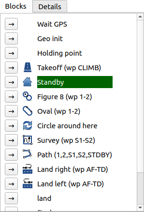

Widgets¶
There are multiple widgets that you can use. They are described here.
Map 2D¶
name: map2d
This is a classic 2D map to display waypoints and aircrafts.
A telemetry message can be dropped on it to display a papget.
It can be configured to add buttons in a left and right columns to display other widgets over it.

map2d, with an overlay widget¶
Strip¶
name: strips
Display some data about the drone status.

From left to right, top to bottom:
aircraft name
flight time
current block
battery
altitude AMSL or AGL (click on the icon to change) | altitude diff to target
AP mode
throttle
ground speed / air speed / vertical speed (click on the icon to change)
status for Link, GPS, RC, IMU
PDF¶
name: PFD
Display attitude of the aircraft
There are 3 views:
from the rear
from the left
from the top
Clicking on the small views make them switch with the main view.
Flight plan¶
name: flightplan
Control the flight plan.
The first tab show the blocks, the current block being highlighted in green. You can switch to a block by cliking on the arrow button.
The second tab show the detail of the flight plan, parsed from the XML. Double click on a block to switch to it.


Plotter¶
name: plotter
Plot a field of a message.
Switch between plots with menu opened by the arrow down button. You can also add new plots coming from ground messages from there.
Add a plot coming from the telemetry class by dropping a field from the Messages tool (same as for the real-time plotter).
Zoom on the plot with the mouse wheel.
Move the plot up or down by dragging it.
Tune the history time with the spinbox
Remove the plot with the top right button.

This widget can be configured from the layout file. See Layout/Plotter.